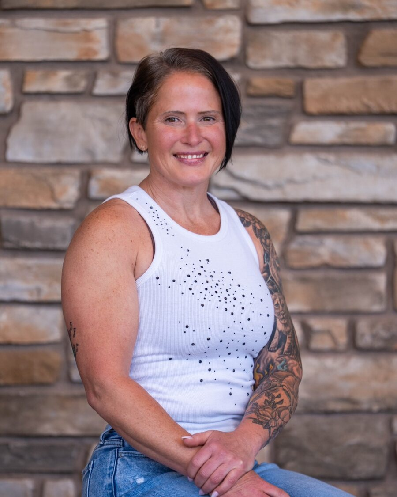

Trained on the job.
Taught in the academy.
Most of us chose this profession because we wanted to make a difference. Over time, chronic stress and repeated exposure to hard calls can quietly pull us away from that purpose. Kari's work is about helping people think clearly under pressure, recover more effectively, and reconnect with why they started, in their work and in their lives.
In collaboration with breathwork educator and author Jessie Coomer, Kari developed and taught academy-approved curriculum that integrated breathwork and nervous system regulation into law-enforcement training, combining evidence-based principles with her own experience as an officer.
- Police-academy instructor
- Trauma-informed Language of Breath instructor
- Teaches from lived experience, including her own recovery from serious injury, not from a textbook

Composure is a skill.
Every piece of equipment you carry came with training, except the one system you use on every call: the one that sets how fast your heart beats, how clearly you think, and whether you sleep when you get home.
My philosophy is that composure isn't a character trait. It's a physical skill, and like any skill it can be taught, drilled, and sharpened until it holds up on the worst day of someone else's life.
Seeking that training isn't an admission that something is wrong. It's what professionals do. The people who show up for everyone else deserve to see how.
Start where you are.
For your department, your academy, or yourself.